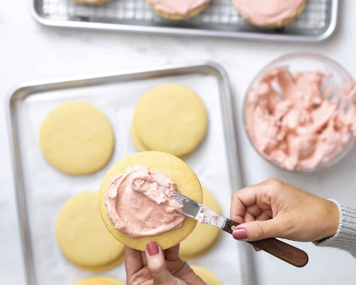
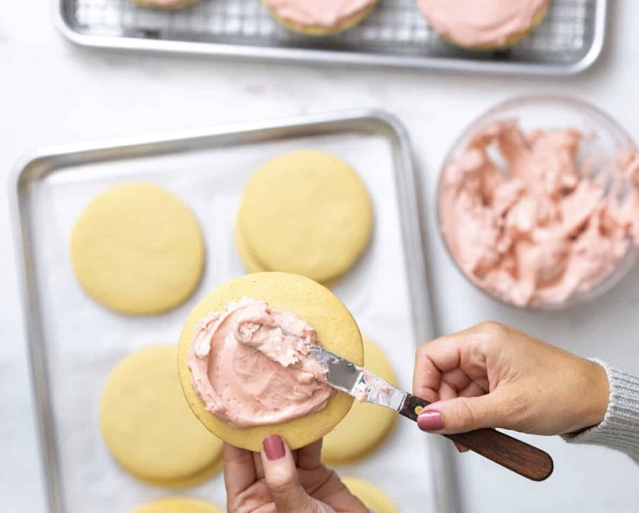

Big Pink Cookie
Big Pink Cookie
 

Pink and Perfect Year Round
Any one else obsessed with the "Big Pink" cookies you buy from the local
cookie shop? These cookies are meant to mimic just that and now you can
make them at home! Due to the frosting, be prepared for extra steps
(but you wont regret it.. trust me). Grab a helping hand,
appetite, and get ready to bake and decorate! The cream cheese frosting
will satisfy a sweet tooth any time of the year.
Cookie Ingredients:
- 5 cups all purpose flour
- 2 teaspoons baking powder
- 1 ½ teaspoons fine sea salt
- 1 teaspoon ground cardamom
- 1 ½ cups (3 sticks) unsalted butter at room temperature
- 1 ½ cups granulated sugar
- 4 large eggs at room temperature
- 1 ½ teaspoons pure vanilla extract
- 1 ½ teaspoons almond extract
Cream Cheese Frosting Ingredients:
- 8 ounces cream cheese (softened)
- ½ cup (1 stick) unsalted butter at room temperature
- 1 teaspoon almond extract
- 3 ½-4 cups powdered sugar
-
¼ cup freeze dried strawberries (crushed & sifted) or a couple of drops
of pink or red food coloring
- ¼ cup decorative sprinkles (optional)
Sugar Cookie Steps:
-
Whisk together the flour, baking powder, salt, and cardamom in a medium
bowl. Set aside.
-
In the bowl of an electric mixer fitted with the paddle attachment,
cream the butter and sugar together on high speed for about 5 minutes,
stopping the mixer occasionally to scrape down the sides of the bowl.
The mixture should be airy and fluffy and slightly lighter in color.
-
Crack the eggs into a liquid measuring cup. With the mixer on low,
slowly add eggs to the bowl one egg at a time, allow each egg to blend
in completely before adding the next. Blend in the vanilla extract,
followed by the almond extract. *hint, the mixture may slightly curdle
when you add the almond extract. Don't worry, it will recede once the
dry ingredients are mixed in. Scrape down the sides of the bowl.
-
Slowly add the dry ingredients and mix on low speed until a smooth
consistency is achieved. The dough will be soft and sticky at this
point.
-
Divide the dough into three equal disks and wrap individually in plastic
wrap. Chill the dough in refrigerator for at least an hour up to
overnight. This allows the dough to develop and firm up so it's easier
to to roll out.
Cream Cheese Frosting Steps:
While the dough chills, prepare the frosting. If using freeze dried
strawberries:
-
Crush the freeze dried strawberries with a mortar and pestle, in a food
processor or by placing them in a sealed plastic baggie and gently
rolling and pounding them with a rolling pin. Keep crushing them until a
fine powder is formed.
-
Next, sift the strawberry powder through a fine mesh sieve to remove any
large seeds.
-
Sift the freeze dried strawberry powder together with the powder sugar.
-
In the bowl of an electric mixer fitted with the paddle attachment,
cream the butter, cream cheese and almond extract until completely
smooth.
-
Slowly add in sifted powdered sugar mix to taste - use 3 ½ cups for a
more tangy cream cheese frosting and 4 cups for a sweeter cream cheese
frosting. Alternatively, if you are using food coloring, slowly add, one
small drop at a time, until you are happy with the color. Blend until
color is evenly distributed throughout the frosting. Place the frosting
in refrigerator until ready to use.
Bake and Decorate:
-
Preheat the oven to 350°. Remove dough from refrigerator and allow it to
soften for a few minutes.
-
Be sure to have cookie cutters and a rolling pin available. For large
cookies, I use a 4" round and 3.5" x 4" heart shape for the large
cookies. For the medium cookies, 3" round and 2.5" x 3" heart shape.
-
On a lightly floured surface, use a rolling pin to roll out one of the
dough disks into ¼" thickness.
-
Cut the rolled dough with cookie cutters, place cookies closely on a
lined baking sheets. Gather the scraps and re-roll and cut dough. Repeat
with remaining dough disks. Place the baking sheet of cut cookies in the
refrigerator or freezer to firm up for at least 15-30 minutes while the
oven preheats. At this stage you can freeze the cut cookies solid on the
baking sheets. Then transfer to a tight sealing baggie and store in the
freezer up to two months.
-
Place 6 large chilled cookies per baking sheet, at least 1" apart. Bake
for 12-16 minutes (depending on size) until the edges start to brown
slightly. Remove from oven and cool on cookie racks.
-
Once the cookies have completely cooled, frost them liberally using a
small offset spatula. Add sprinkles if desired.